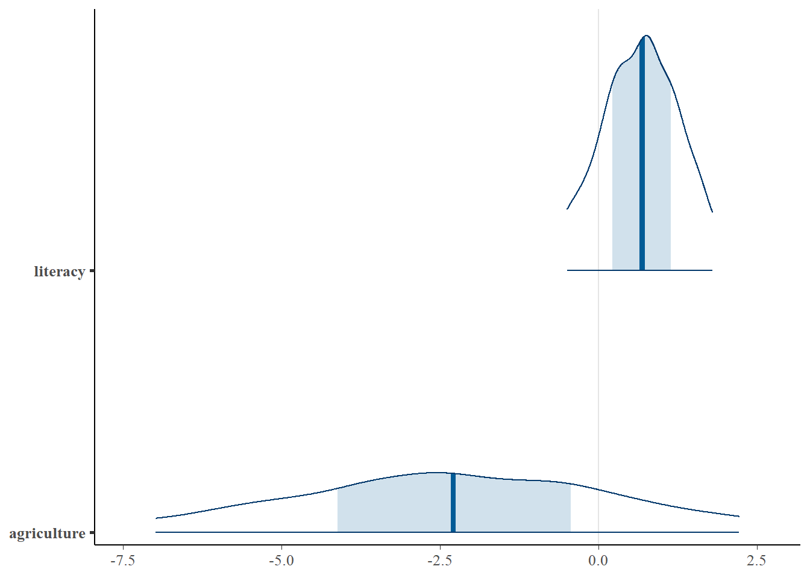
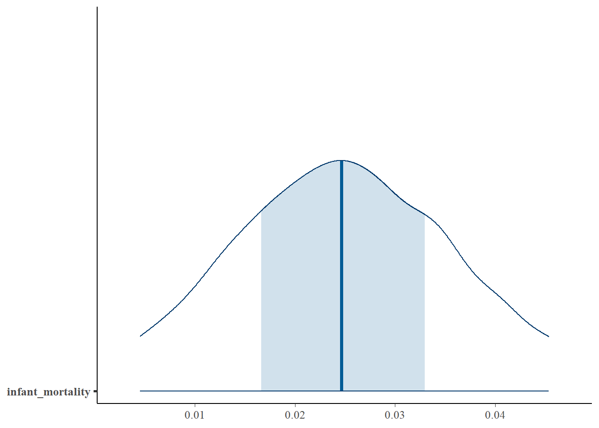
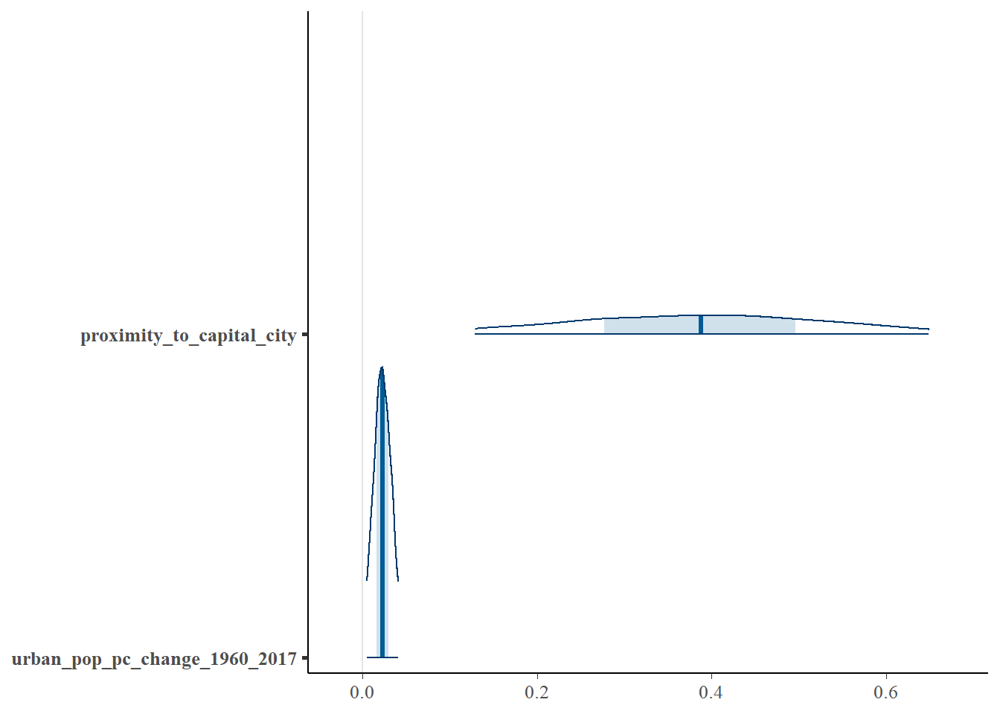
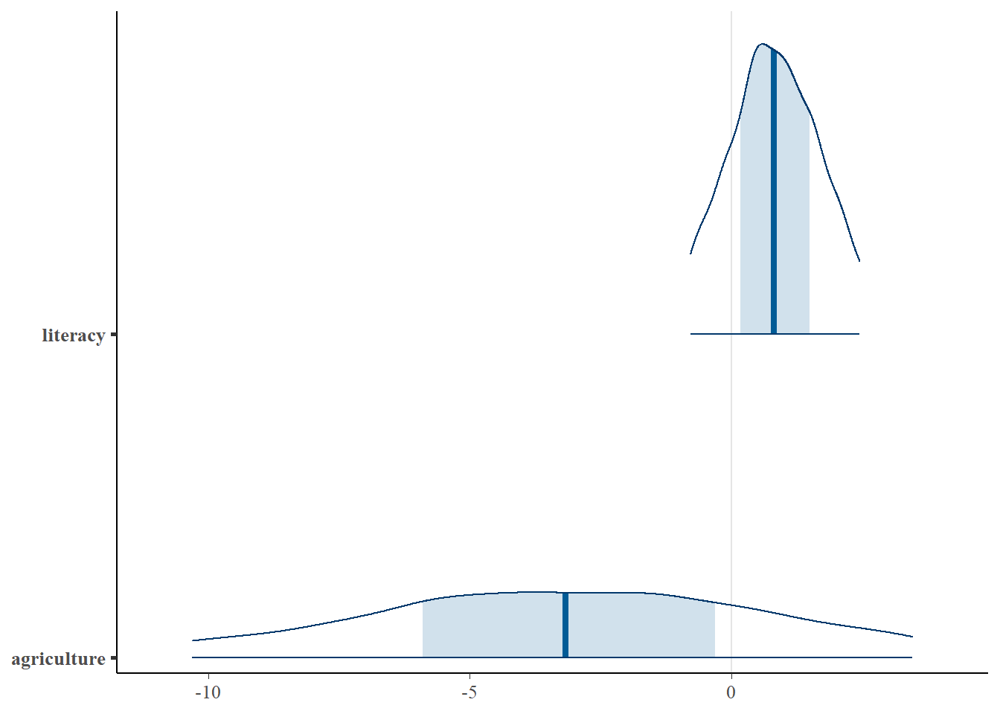
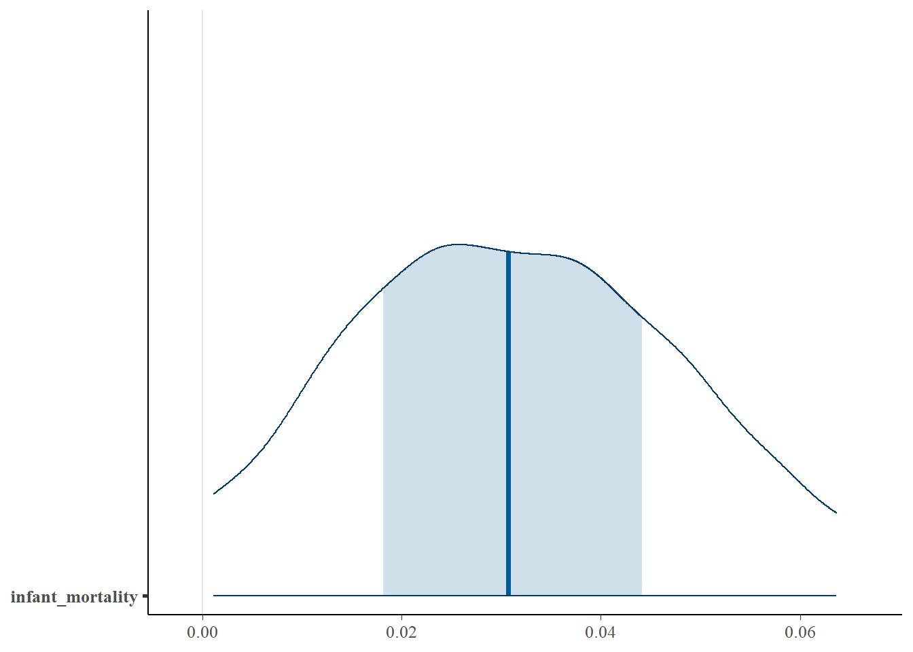
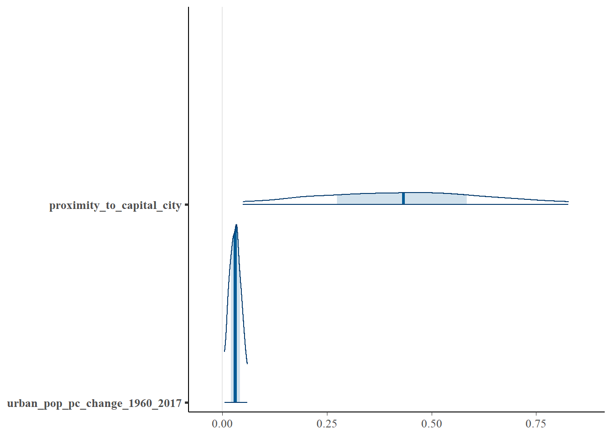

Code
- Vulnerable: 1
- definitely endangered: 2
- severely endangered: 3
- critically endangered: 4
- extinct: 5To quantify and ascertain whether social and economic factors affect the degree of language endangerment, two Bayesian linear models were built:
The social and economic factors explored are:
\[ \begin{aligned} \operatorname{degree\_of\_endangerment\_numeric} &= \alpha + \beta_{1}(\operatorname{literacy})\\ &\quad + \beta_{2}(\operatorname{infant\_mortality}) + \beta_{3}(\operatorname{agriculture})\\ &\quad + \beta_{4}(\operatorname{proximity\_to\_capital\_city}) + \beta_{5}(\operatorname{minority\_ed\_policy})\\ &\quad + \beta_{6}(\operatorname{urban\_pop\_pc\_change\_1960\_2017}) + \epsilon \end{aligned} \]
| Term | Median | Lower Limit | Upper Limit | Is Significant? |
|---|---|---|---|---|
| (Intercept) | 0.594 | −0.970 | 2.145 | No |
| literacy | 0.677 | −0.686 | 2.076 | No |
| infant_mortality | 0.025 | 0.000 | 0.050 | No |
| agriculture | −2.300 | −7.844 | 3.066 | No |
| proximity_to_capital_city | 0.388 | 0.076 | 0.702 | Yes |
| minority_ed_policy | 0.441 | −0.076 | 0.952 | No |
| urban_pop_pc_change_1960_2017 | 0.023 | 0.002 | 0.044 | Yes |
\[ \begin{aligned} \operatorname{\widehat{degree\_of\_endangerment\_numeric}} &= 0.595 + 0.678(\operatorname{literacy})\\ &\quad + 0.025(\operatorname{infant\_mortality}) - 2.300(\operatorname{agriculture})\\ &\quad + 0.388(\operatorname{proximity\_to\_capital\_city}) + 0.441(\operatorname{minority\_ed\_policy})\\ &\quad + 0.023(\operatorname{urban\_pop\_pc\_change\_1960\_2017}) \end{aligned} \]



Urbanization further endangers languages.
\[ \begin{aligned} \operatorname{\phi} &= \beta_{1}(\operatorname{literacy})\\ &\quad + \beta_{2}(\operatorname{infant\_mortality}) + \beta_{3}(\operatorname{agriculture})\\ &\quad + \beta_{4}(\operatorname{proximity\_to\_capital\_city}) + \beta_{5}(\operatorname{minority\_ed\_policy})\\ &\quad + \beta_{6}(\operatorname{urban\_pop\_pc\_change\_1960\_2017}) \end{aligned} \]
\[ \begin{aligned} \log\left[ \frac { P( \operatorname{vulnerable} \geq \operatorname{definitely\ endangered} ) }{ 1 - P( \operatorname{vulnerable} \geq \operatorname{definitely\ endangered} ) } \right] &= \alpha_{1} - \phi + \epsilon \\ \log\left[ \frac { P( \operatorname{definitely\ endangered} \geq \operatorname{severely\ endangered} ) }{ 1 - P( \operatorname{definitely\ endangered} \geq \operatorname{severely\ endangered} ) } \right] &= \alpha_{2} - \phi + \epsilon \\ \log\left[ \frac { P( \operatorname{severely\ endangered} \geq \operatorname{critically\ endangered} ) }{ 1 - P( \operatorname{severely\ endangered} \geq \operatorname{critically\ endangered} ) } \right] &= \alpha_{3} - \phi + \epsilon \\ \log\left[ \frac { P( \operatorname{critically\ endangered} \geq \operatorname{extinct} ) }{ 1 - P( \operatorname{critically\ endangered} \geq \operatorname{extinct} ) } \right] &= \alpha_{4} - \phi + \epsilon \end{aligned} \]
| Term | Median | Lower Limit | Upper Limit | Is Significant? |
|---|---|---|---|---|
| literacy | 0.816 | −1.149 | 2.775 | No |
| infant_mortality | 0.031 | −0.004 | 0.070 | No |
| agriculture | −3.189 | −11.713 | 4.913 | No |
| proximity_to_capital_city | 0.433 | −0.016 | 0.904 | No |
| minority_ed_policy | 0.683 | −0.050 | 1.442 | No |
| urban_pop_pc_change_1960_2017 | 0.031 | 0.002 | 0.066 | Yes |
| vulnerable|definitely endangered | 1.009 | −1.246 | 3.281 | No |
| definitely endangered|severely endangered | 2.551 | 0.263 | 4.888 | Yes |
| severely endangered|critically endangered | 4.037 | 1.613 | 6.525 | Yes |
| critically endangered|extinct | 6.109 | 3.410 | 9.086 | Yes |
\[ \begin{aligned} \operatorname{\hat{\phi}} &=0.816(\operatorname{literacy})\\ &\quad + 0.031(\operatorname{infant\_mortality}) - 3.189(\operatorname{agriculture})\\ &\quad + 0.433(\operatorname{proximity\_to\_capital\_city}) + 0.683(\operatorname{minority\_ed\_policy})\\ &\quad + 0.031(\operatorname{urban\_pop\_pc\_change\_1960\_2017}) \end{aligned} \]
\[ \begin{aligned} \log\left[ \frac { P( \operatorname{vulnerable} \geq \operatorname{definitely\ endangered} ) }{ 1 - P( \operatorname{vulnerable} \geq \operatorname{definitely\ endangered} ) } \right] &= 1.009 - \hat{\phi}\\ \log\left[ \frac { P( \operatorname{definitely\ endangered} \geq \operatorname{severely\ endangered} ) }{ 1 - P( \operatorname{definitely\ endangered} \geq \operatorname{severely\ endangered} ) } \right] &= 2.551 - \hat{\phi} \\ \log\left[ \frac { P( \operatorname{severely\ endangered} \geq \operatorname{critically\ endangered} ) }{ 1 - P( \operatorname{severely\ endangered} \geq \operatorname{critically\ endangered} ) } \right] &= 4.037 - \hat{\phi} \\ \log\left[ \frac { P( \operatorname{critically\ endangered} \geq \operatorname{extinct} ) }{ 1 - P( \operatorname{critically\ endangered} \geq \operatorname{extinct} ) } \right] &= 6.109 - \hat{\phi} \end{aligned} \]



Urbanization increases the odds of language endangerment.
The following movements in the severity of language endangerment are also very significant:
To help preserve endangered languages, policy makers must introduce policies that make endangered regions more attractive to prevent migration of current speakers to urban regions.
Also improving literacy rate and agricultural economic opportunities in these regions could help preserve the local population, and in turn preserve the local language.
Languages that are already classified as definitely endangered are at significant risk of going extinct. Urgent attention should be given to such languages.